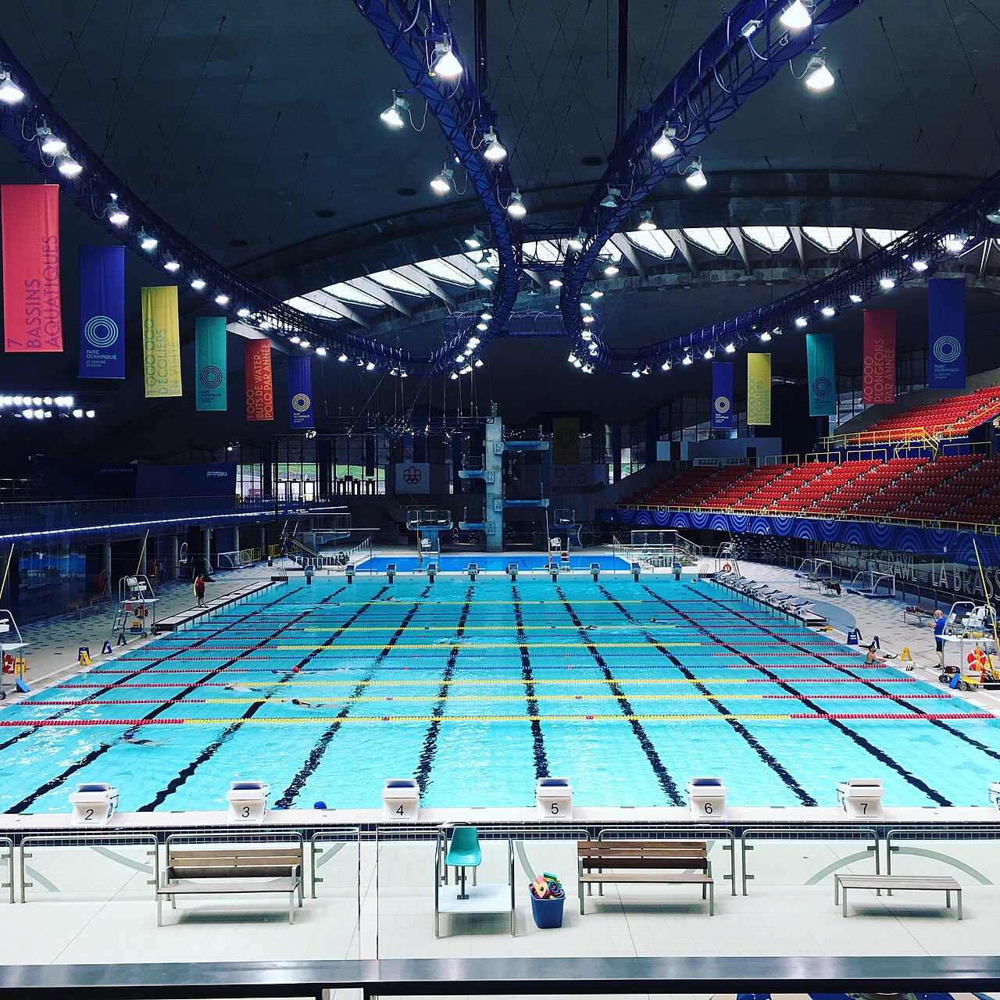

A competição entra em sua reta decisiva com a realização da terceira e última etapa em Astana, no Cazaquistão. Alguns dos principais nadadores do cenário internacional estarão reunidos na Barys Arena para definir os campeões gerais de uma temporada marcada por desempenhos expressivos, disputas equilibradas e novas marcas históricas.
Organizada pela World Aquatics, a competição percorreu três países em outubro, em um circuito batizado de Silk Road Tour, ou Tour da Rota da Seda. A proposta conecta Baku, no Azerbaijão, Tashkent, no Uzbequistão, e Astana, no Cazaquistão, cidades relacionadas às antigas rotas comerciais que aproximavam diferentes regiões da Europa e da Ásia.
Mais do que encerrar o calendário da Copa do Mundo, a etapa cazaque representa uma oportunidade importante para os atletas que se preparam para o Campeonato Mundial de Natação em Piscina Curta de 2026, programado para dezembro, em Pequim, na China.
A competição acontece em piscina de 25 metros, formato que valoriza aspectos técnicos como viradas, saídas, velocidade submersa e eficiência nas transições. Em uma modalidade definida frequentemente por centésimos de segundo, esses fundamentos podem ser determinantes na busca por vitórias e recordes.
O caminho até Astana
A temporada foi organizada em três etapas consecutivas, todas realizadas em outubro. O circuito começou em Baku, passou por Tashkent e termina em Astana, reunindo disputas masculinas e femininas em diferentes estilos e distâncias.
A escolha das sedes também representa uma expansão geográfica da competição. Em 2025, a Copa do Mundo passou pela América do Norte. Já em 2026, o circuito foi direcionado à Ásia, levando a natação de alto rendimento a novos mercados e públicos.
Astana recebe pela primeira vez uma etapa da Copa do Mundo de Natação. A realização também marca a quarta oportunidade em que o Cazaquistão sedia um evento da World Aquatics, depois de três competições internacionais de polo aquático realizadas na década de 2010.
A programação em Astana contempla 34 provas individuais, distribuídas igualmente entre homens e mulheres. As disputas incluem nado livre, costas, peito, borboleta e medley, com diferentes distâncias ao longo dos três dias.
Como funciona a Copa do Mundo de Natação
A competição é um circuito internacional organizado anualmente pela World Aquatics, entidade responsável pela administração dos esportes aquáticos em nível mundial. Diferentemente do Campeonato Mundial de Natação, realizado como um grande evento concentrado em uma sede, a Copa do Mundo funciona como uma sequência de etapas disputadas em diferentes cidades e países.
Cada etapa possui suas próprias eliminatórias, finais, medalhas e vencedores. Entretanto, os resultados também alimentam uma classificação geral acumulada, que determina os campeões masculino e feminino da temporada. Isso significa que um nadador pode conquistar várias medalhas de ouro ao longo do circuito sem necessariamente terminar como campeão geral.
O número de etapas e as cidades-sede podem variar entre as edições. Em 2026, a competição acontece em três semanas consecutivas, com provas em piscinas de 25 metros.
O sistema de pontuação combina dois critérios: a posição conquistada pelo atleta na final e a qualidade técnica do tempo registrado.
Nas provas individuais, os oito primeiros colocados recebem pontos conforme a classificação:
- Primeiro lugar — 10 pontos
- Segundo lugar — 8 pontos
- Terceiro lugar — 6 pontos
- Quarto lugar — 5 pontos
- Quinto lugar — 4 pontos
- Sexto lugar — 3 pontos
- Sétimo lugar — 2 pontos
- Oitavo lugar — 1 ponto
Além dessa pontuação, os nadadores recebem pontos de desempenho, calculados com base nas tabelas da World Aquatics, que permitem comparar marcas obtidas em provas diferentes. Quanto mais expressivo for o tempo em relação à referência mundial da prova, maior será a pontuação técnica.
Para a classificação de cada etapa, são considerados apenas os três melhores resultados individuais de cada nadador, somando os pontos de colocação e desempenho. Assim, participar de muitas provas não garante automaticamente uma vantagem no ranking.
Como são definidos os campeões
Ao término da última etapa, as pontuações acumuladas ao longo do circuito determinam os vencedores gerais masculino e feminino. Não existe uma corrida final específica para decidir esses títulos: o campeão é o atleta que reúne a maior pontuação durante a temporada.
Esse formato valoriza a regularidade, a capacidade de competir em alto nível em diferentes provas e a obtenção de marcas expressivas. Um nadador que mantém resultados fortes nas três etapas pode superar outro que conquista vitórias isoladas, mas apresenta menor consistência ao longo do circuito.
Grandes campeões e brasileiros que fizeram história na Copa do Mundo de Natação
A história da competição reúne alguns dos maiores nomes da modalidade, incluindo campeões olímpicos, recordistas mundiais e atletas que construíram trajetórias de domínio no circuito internacional. Entre eles está Michael Phelps, considerado um dos maiores nadadores de todos os tempos, embora nunca tenha conquistado o título geral da competição.
O norte-americano teve participações expressivas na Copa do Mundo. Phelps conquistou 32 medalhas no circuito, sendo 19 ouros, sete pratas e seis bronzes. Um dos momentos mais marcantes aconteceu na etapa de Melbourne, na Austrália, em 2003, quando venceu seis provas individuais. Apesar desses resultados, não terminou nenhuma temporada como campeão geral.
Entre os maiores campeões da história da competição está a húngara Katinka Hosszú, conhecida pelo apelido de Dama de Ferro. A nadadora conquistou cinco títulos gerais consecutivos, entre 2012 e 2016, estabelecendo um período de domínio impressionante. Sua versatilidade para disputar diferentes estilos e distâncias foi determinante para o sucesso, especialmente nas provas de medley. Em 2014, por exemplo, terminou a temporada com 68 medalhas, sendo 51 de ouro.
No masculino, o sul-africano Chad le Clos também construiu uma trajetória histórica. Campeão geral em quatro temporadas, destacou-se principalmente nas provas de borboleta. Na edição de 2014, venceu 27 provas ao longo do circuito, conquistando 27 medalhas de ouro.
Mais recentemente, a Copa do Mundo também consagrou protagonistas dos Jogos Olímpicos de Paris 2024. Naquele ano, o francês Léon Marchand conquistou o título geral masculino, enquanto a norte-americana Kate Douglass venceu a classificação feminina.
O Brasil também possui um capítulo importante na história da competição. Em 2010, Thiago Pereira conquistou o título geral masculino, tornando-se o primeiro brasileiro a alcançar esse feito.
Especialista nas provas de medley, Thiago dominou boa parte das etapas daquela temporada e terminou o circuito com 178 pontos, superando os sul-africanos Darian Townsend, segundo colocado com 126, e Roland Schoeman, terceiro com 74.
A temporada também ficou marcada pela regularidade do Thiago nas provas de 100, 200 e 400 metros medley, demonstrando a capacidade de competir em alto nível em diferentes países.
Outro brasileiro que deixou sua marca no circuito foi César Cielo. Em outubro de 2008, poucos meses depois de conquistar o ouro olímpico dos 50 metros livre em Pequim, Cielo venceu os 50 e os 100 metros livre na etapa de Belo Horizonte, diante do público brasileiro.
No feminino, Fabíola Molina também teve uma participação memorável naquela edição. Aos 33 anos, conquistou três medalhas de ouro na etapa mineira, vencendo os 50 e 100 metros costas e os 100 metros medley.
Esses resultados demonstram que a Copa do Mundo de Natação não é apenas uma competição preparatória. Ao longo de sua história, o circuito consagrou campeões olímpicos, revelou atletas capazes de dominar diferentes provas e proporcionou conquistas importantes para o esporte brasileiro.
A disputa pelo título de 2026
A decisão em Astana terá como um dos principais atrativos a proximidade entre os primeiros colocados do ranking geral.
Após as duas etapas iniciais, a holandesa Marrit Steenbergen lidera a classificação feminina, enquanto o russo Egor Kornev aparece na primeira posição masculina.
Classificação geral feminina:
- Marrit Steenbergen (Países Baixos) — 116,7 pontos
- Yu Yiting (China) — 111,0 pontos
- Roos Vanotterdijk (Bélgica) — 108,8 pontos
Classificação geral masculina:
- Egor Kornev (Rússia) — 116,7 pontos
- Pieter Coetze (África do Sul) — 114,3 pontos
- Luke Barr (Estados Unidos) — 113,0 pontos
Astana será o cenário da definição dos títulos gerais de 2026, tornando cada apresentação decisiva para os atletas que disputam as primeiras posições.
Recordes mundiais transformam a edição de 2026
A segunda etapa, disputada em Tashkent, elevou o nível técnico da Copa do Mundo com resultados que entraram para a história da natação.
Um dos grandes protagonistas foi Egor Kornev. O nadador russo estabeleceu o recorde mundial dos 50 metros borboleta em piscina curta, completando a prova em 21s28.
O desempenho reforçou uma campanha que já havia chamado atenção na abertura do circuito. Em Baku, Kornev igualou o recorde mundial dos 100 metros livre ao registrar 44s88.
Outro destaque foi Pieter Coetze. O sul-africano quebrou o recorde mundial dos 50 metros costas em Tashkent, com 22s09, e também apresentou uma das maiores performances da etapa nos 100 metros costas.
O australiano Cameron McEvoy também brilhou na velocidade. Ele venceu os 50 metros livre em Tashkent com 20s13, estabelecendo um novo recorde da Copa do Mundo e registrando o segundo melhor tempo da história da prova em piscina curta.
Entre as mulheres, Marrit Steenbergen confirmou sua condição de favorita ao conquistar os 100 metros livre em 50s32, estabelecendo um novo recorde europeu.
A combinação de recordes mundiais, continentais e da própria competição demonstra o elevado nível técnico da temporada e aumenta o interesse pelas provas finais no Cazaquistão.
Premiação milionária e a disputa pela Tríplice Coroa
A Copa do Mundo de Natação 2026 distribui uma premiação total de US$ 1,2 milhão, sem considerar os bônus adicionais por marcas históricas e conquistas específicas.
Além dos títulos gerais masculino e feminino, existe uma disputa paralela por uma das premiações tradicionais do circuito: a Tríplice Coroa, conhecida internacionalmente como Triple Crown.
O reconhecimento é destinado aos nadadores que conseguem vencer uma mesma prova nas três etapas da temporada, com regras específicas para as distâncias de 800 e 1.500 metros livre.
Os vencedores recebem um bônus de US$ 10 mil. A competição também estabelece uma premiação adicional de US$ 10 mil para cada recorde mundial alcançado.
Entre os atletas que chegam a Astana em condições de disputar esse reconhecimento está o norte-americano Luke Barr, vencedor dos 200 metros peito nas etapas de Baku e Tashkent.
A belga Roos Vanotterdijk também aparece entre os nomes de destaque, com possibilidades de conquistar a Tríplice Coroa em duas provas.
Preparação para o Mundial
A edição de 2026 possui um significado adicional por anteceder o Campeonato Mundial de Natação em Piscina Curta, que será realizado em dezembro, na capital chinesa.
A World Aquatics estabeleceu um sistema de classificação por wild card, para ampliar as oportunidades de participação no Mundial.
Pelas regras anunciadas, nadadores que terminarem entre os três primeiros colocados de uma final individual da Copa do Mundo e alcançarem o índice A poderão conquistar uma vaga adicional para o evento em Pequim.
O regulamento permite que cada federação nacional inscreva até três atletas extras por esse mecanismo.
Isso transforma as etapas da Copa do Mundo em oportunidades competitivas relevantes não apenas para nadadores já estabelecidos na elite, mas também para atletas que buscam ampliar sua presença nas principais competições internacionais.
Astana, portanto, representa simultaneamente o encerramento de uma competição internacional e uma etapa importante da preparação para outro grande evento da modalidade.
Programação da competição em Astana
A competição terá eliminatórias e finais durante os três dias, com os horários convertidos para o fuso de Brasília.
Quinta-feira, 15 de outubro
- Eliminatórias: 2h da madrugada
- Finais: 10h da manhã
Sexta-feira, 16 de outubro
- Eliminatórias: 2h da madrugada
- Finais: 10h da manhã
Sábado, 17 de outubro
- Eliminatórias: 2h da madrugada
- Finais: 10h da manhã
A programação está sujeita a alterações pela organização.
Onde assistir à Copa do Mundo de Natação 2026
Para o público brasileiro, a World Aquatics relaciona a SporTV como responsáveis pela transmissão das finais da competição.
Encerramento de uma temporada importante para a natação mundial
A competição reúne elementos que ajudam a explicar a importância do circuito no cenário internacional: atletas consagrados, recordes históricos, novos talentos, premiações expressivas e a preparação para grandes campeonatos.
A escolha de três cidades vinculadas à antiga Rota da Seda também amplia o alcance geográfico da modalidade e coloca em evidência países que buscam fortalecer sua presença na organização de competições internacionais.
No aspecto esportivo, a edição já apresentou feitos relevantes, especialmente nas provas de velocidade.
A etapa de Astana será responsável por transformar essas performances individuais em uma classificação final, definindo os campeões gerais e os vencedores das premiações especiais.
Para os protagonistas da temporada, os três dias no Cazaquistão representam a oportunidade de encerrar o circuito com títulos, melhorar marcas pessoais e consolidar resultados antes do Campeonato Mundial de piscina curta em Pequim.
Com disputas abertas nas classificações masculina e feminina e a possibilidade de novas marcas históricas, a Copa do Mundo de Natação 2026 chega à sua última etapa reunindo os principais ingredientes de uma grande decisão: equilíbrio, velocidade, excelência técnica e a busca por um lugar na história da modalidade.